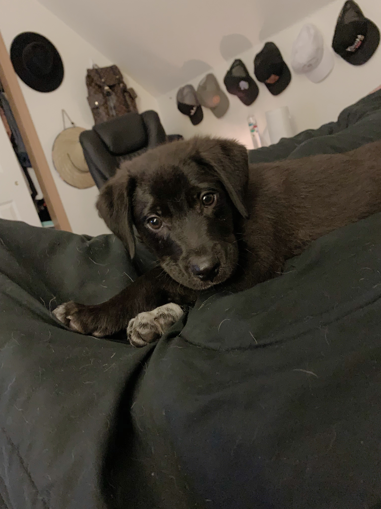
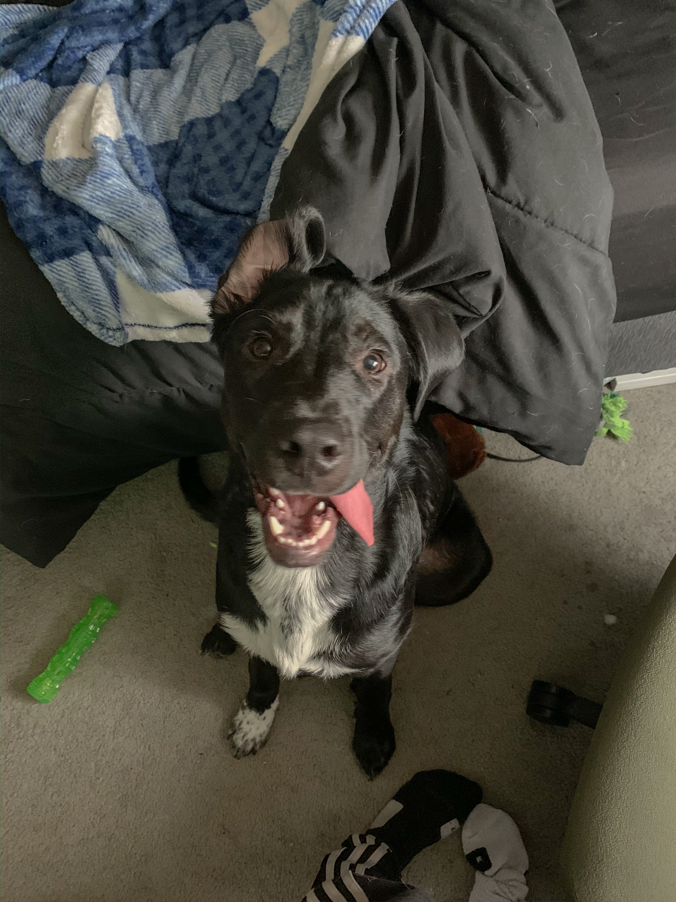

About Me:
My name is Courtney, and I am a Media Arts major at the U of M. I am very excited to be graduating at the end of next semester. I have an adorable dog named Sherman. He is two years old, and he has the biggest personality. He loves to go to the park and run around.
Other Interests:
My boyfriend and I have recently been doing "Bob Ross Nights," as we call them. We got canvases, paint, brushes, everything. We picked out a painting that we wanted to attempt, and went for it. The paintings usually don't turn out that great, but we have a lot of fun. Sometimes we get Sherman a small canvas. We let him pick out the paint colors by laying them out and seeing which ones he sniffs or nudges. Then we put the canvas with some paint inside a plastic sandwich bag, and put peanut butter on the outside so that he can lick away and create his masterpiece. Now we keep a few canvases, paint, and brushes on deck for the next "Bob Ross Night."

